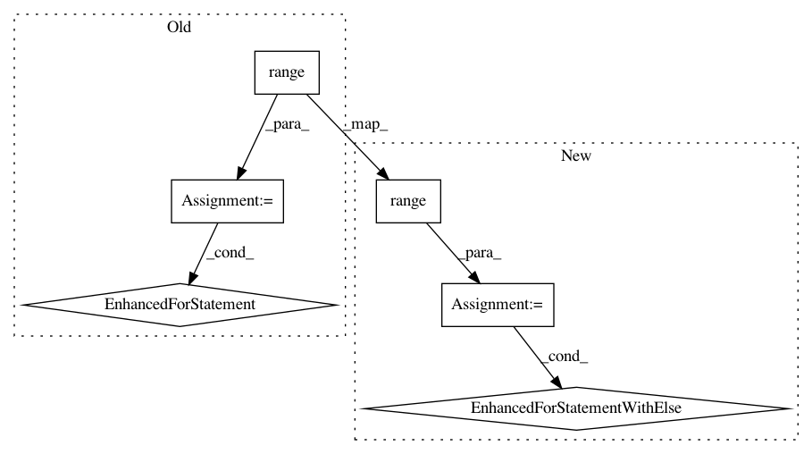

c773824f4f22a14375a2451264d1b5708addd0f9,rllib/models/tests/test_distributions.py,TestDistributions,_stability_test,#TestDistributions#Any#Any#Any#Any#Any#,27
Before Change
]
inputs = np.zeros(shape=network_output_shape, dtype=np.float32)
for batch_item in range(network_output_shape[0]):
for num in range(len(inputs[batch_item])):
inputs[batch_item][num] = np.random.choice(extreme_values)
dist = distribution_cls(inputs, {})
for _ in range(100):
sample = dist.sample()
if fw != "tf":
After Change
]
inputs = np.zeros(shape=network_output_shape, dtype=np.float32)
for batch_item in range(network_output_shape[0]):
for num in range(len(inputs[batch_item]) // 2):
inputs[batch_item][num] = np.random.choice(extreme_values)
else:
// For Gaussians, the second half of the vector is
// log standard deviations, and should therefore be
// the log of a positive number >= 1.
inputs[batch_item][num] = np.log(
max(1, np.random.choice((extreme_values))))
dist = distribution_cls(inputs, {})
for _ in range(100):
sample = dist.sample()
if fw != "tf":
In pattern: SUPERPATTERN
Frequency: 10
Non-data size: 6
Instances
Project Name: ray-project/ray
Commit Name: c773824f4f22a14375a2451264d1b5708addd0f9
Time: 2020-06-03
Author: twakhare@gmail.com
File Name: rllib/models/tests/test_distributions.py
Class Name: TestDistributions
Method Name: _stability_test
Project Name: ray-project/ray
Commit Name: 8b3f79f3079834f00c7ec62d5decd6bc026c1bc8
Time: 2020-11-14
Author: rliaw@berkeley.edu
File Name: python/ray/tune/tests/test_cluster.py
Class Name:
Method Name: test_cluster_interrupt_searcher
Project Name: TheAlgorithms/Python
Commit Name: 938dd0bbb5145aa7c60127745ae0571cb20a2387
Time: 2019-12-06
Author: vargasnikolass@gmail.com
File Name: maths/prime_numbers.py
Class Name:
Method Name: primes
Project Name: probcomp/bayeslite
Commit Name: 04ca599d1c7cf75e54b31eb9ab6642fa0e3f5aaa
Time: 2015-01-23
Author: riastradh+probcomp@csail.mit.edu
File Name: external/lemonade/dist/lemonade/acttab.py
Class Name:
Method Name: acttab_insert
Project Name: tristandeleu/pytorch-maml-rl
Commit Name: bef7dd92cbdd2c81a7d89786b9a76b011f1bc086
Time: 2018-06-19
Author: tristan.deleu@gmail.com
File Name: maml_rl/baseline.py
Class Name: LinearFeatureBaseline
Method Name: fit
Project Name: jonathf/chaospy
Commit Name: dc3d10b7a1ef9eef125047a3319484afe9af5220
Time: 2018-12-14
Author: jonathf@gmail.com
File Name: src/chaospy/distributions/approx.py
Class Name:
Method Name: inv
Project Name: idaholab/raven
Commit Name: dfc8af582ce6f25e6b9f5d338b22bff1c41538d7
Time: 2020-08-27
Author: paul.talbot@inl.gov
File Name: framework/Steps.py
Class Name: MultiRun
Method Name: _addNewRuns
Project Name: tensorlayer/tensorlayer
Commit Name: 16a31e2c9fedc654e9117b42b8144adf1d0e4900
Time: 2020-02-03
Author: 34995488+Tokarev-TT-33@users.noreply.github.com
File Name: examples/reinforcement_learning/tutorial_TRPO.py
Class Name: TRPO
Method Name: update
Project Name: mynlp/ccg2lambda
Commit Name: 2cf2d2c30fed50bf20f82e1e52d74453ad256861
Time: 2017-06-13
Author: pascual@nii.ac.jp
File Name: scripts/restruct.py
Class Name:
Method Name: main
Project Name: GoogleCloudPlatform/python-docs-samples
Commit Name: fb94938a6b7b7f89d59a1dcfd81b64b88ba24c7a
Time: 2016-11-16
Author: jonwayne@google.com
File Name: datastore/cloud-client/snippets.py
Class Name:
Method Name: transactional_update